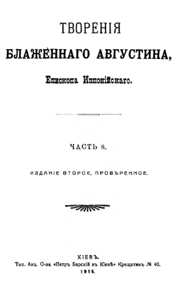

Труд блаженного Августина Иппонийского "О книге Бытия" подготовлен в электронном виде на основании издания "Блаженный Августин. Творения", вышедшего в серии "Библиотека отцов и учителей церкви" издательства "Паломник" в 1997 году (редакционный совет серии: священник Андрей Лобашинский, Карманов Е. А., Роговой П. Н., Сидоров А. И.). В свою очередь основой для бумажного издания послужили "Творения блаженного Августина, епископа Иппонийского", вышедшие в г. Киеве в 1901-1915 гг.

При подготовке электронной версии издания старая орфография была заменена на новую, а ссылки на цитаты из Священного Писания в тексте выделены красным цветом.
Все замечания и предложения по электронному варианту издания присылайте по адресу: vlad@sch.udm.ru
В работе над изданием принимали участие р. Б. Владимир и Сергей.